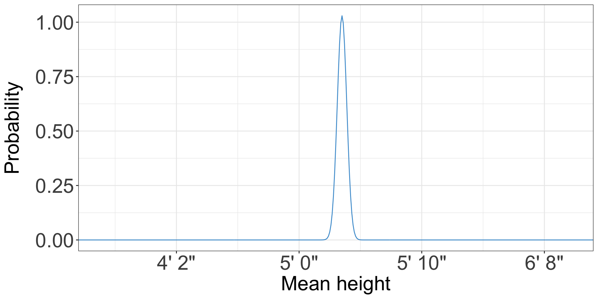

| year | age | sex | college | trantime | incwage_cpiu_2022 |
|---|---|---|---|---|---|
| 2019 | 41 | Male | FALSE | 15 | 460,138 |
| 2009 | 54 | Female | TRUE | 20 | 43,538 |
| 2022 | 37 | Male | FALSE | 30 | 25,000 |
| 2009 | 54 | Female | FALSE | 15 | 84,556 |
| 2019 | 35 | Female | TRUE | 25 | 37,409 |
| 2000 | 27 | Female | FALSE | 15 | 30,590 |
Introduction to Data Analysis with Excel and R
Matt Bhagat-Conway
About me
- Professor in Odum Institute and in City and Regional Planning
- Research on transportation decisionmaking and computational methods in planning
- Three years as a software developer before grad school
What we’ll cover today
- Descriptive statistics
- Data visualization
- Regression
The tools
- Excel: commonly used for simple data analyses, widely available
- R (via Posit Cloud): programming environment for data analysis
Our research question: extreme commuting
- How prevalent is “extreme commuting” (more than one hour each way)?
- Does this vary by sex?
- Has this changed over time?
- Is the sex difference explained by age, income, or college education?
Our data
- 50,000 responses from the US Census and American Community Survey, from 2000–2022
- Information on commute time, age, sex, income, and education status
- Extracted from the Integrated Public Use Microdata Sample USA
The Decennial Census
- By constitutional mandate, the Census Bureau conducts a full census of every person in the US every 10 years (since 1790)
- Primary purpose is to apportion US House seats
- Very limited information
The American Community Survey
- Up until the 2000 Census, there was a “long-form” questionnaire that a fraction of households received, covering a lot more topics
- Starting in 2005, the Census Bureau launched the American Community Survey
- This samples only a fraction of the population, but covers a much wider variety of topics
- Survey is conducted annually
Collecting the Decennial Census
- The Decennial Census is conducted every ten years, in years ending in zero
- Most households are invited by mail, with an option to respond online or by mail
- Some surveyed in person, some by phone
- One of the highest-quality data collection efforts in the world, but not perfect—the 2020 Census likely undercounted Hispanic, Black, and Native American residents
- Cities and states can appeal their counts if they think they were undercounted
- All of this matters: New York State was 89 people short of keeping all of their House seats
Collecting the ACS
- The ACS is conducted annually
- 3.54 million addresses sampled, with oversamples in rural areas
- Response rates generally 85-98%; some decline since the pandemic
One and five year ACS
- To provide better estimates, the ACS is released in one- and five-year versions
- The five-year versions aggregate the samples from five years to provide less sampling error and smaller margins of error
- One-year data is only released for areas with over 65,000 people (40% of NC counties, 26% of all counties)
- Five-year data is released all the way down to block groups (though margins of error can still be large)
The public use microdata sample
- Most Census data is distributed in aggregate form
- Averages for counties, towns, tracts (neighborhoods), etc.
- For some analyses, you need disaggregate individual responses
- The public use microdata sample is an anonymized subset of individual Census and ACS responses
Our data
Our data: columns
year: Year of data collection (for five year samples, end of five year period)age: Age of respondentcollege: Whether the respondent went to collegetrantime: One-way commute time in minutesincwage_cpiu_2022: Personal income, converted to 2022 dollars
What is statistics
- At its heart, statistics is a tool to summarize data into actionable information
- Statistics can describe the current situation, forecast future outcomes, and understand relationships between variables
- Algebra and calculus are math with too few numbers, statistics is math with too many
Descriptive vs. inferential statistics
- Descriptive statistics describe patterns in data
- Inferential statistics are focused on statistical “tests” to determine if data are consistent with hypotheses
- Descriptive statistics are the most common in planning
Statistical data
- Many consistent observations
- Generally numerical
- Representative (more on that below)
Measures of central tendency
- The most common statistics are measures of central tendency
- These statistics describe a dataset with a single number representing the center of the dataset
The mean
- Most common measure of central tendency
- The income everyone would have if income were evenly distributed
The mean
- Add up all the incomes
- Divide by the number of people
The mean
\[ \bar x = \frac{x_1 + x_2 + \cdots + x_n}{n} \]
or
\[ \bar x = \frac{\sum\limits_{i=1}^n x_i}{n} \]
Calculating means
- Let’s calculate the mean commute time in our data, using Excel
- Download the data here: https://projects.indicatrix.org/odum-data-analysis
- Open that file in Excel
Let’s calculate the mean commute time
- Enter into a blank cell:
=AVERAGE(E:E)or=AVERAGE(E2:E50001)
- 25.3889
Means can be wonky
All of these are true:
- The average American has 1.006 skeletons
- The average starting salary for UNC Geography majors graduating in 1986 was $250,000 ($728,000 today)
- The average US president has spent 2 seconds in a high-radiation area cleaning up after a nuclear meltdown
Why? Outliers
- Very large or very small values have a strong effect on the mean
- Because of how the mean is calculated, very large values are distributed over all observations
Why? Outliers
The median
- The median is the middle number in a set of numbers
- The median is much less sensitive to outliers, because it is based on the numbers in the middle rather than all the numbers

Calculating the median
- Sort the numbers
- If there are an odd number of observations => find the middle one
- If there are an even number of observations => take the mean of the two in the middle
Calculating the median in Excel
- Enter into a blank cell:
=MEDIAN(E:E)or=MEDIAN(E2:E50001)
- 20
Medians and outliers
- What happens to the mean if someone’s commute time increase from 30 minutes to 120?
- What happens to the median?
- Try it (edit cell E4)
When to use medians
- Generally, any dataset likely to have outliers
- Commonly used for
- Income
- Housing prices
The relationship between the median and the mean
- The mean will be pulled in the direction of any outliers
- So, in a datset with large outliers, the mean will be higher than the median (e.g. income)
- Opposite in a dataset with small outliers (e.g. age at cancer diagnosis)
Calculating a proportion in Excel
- What we really want to know is what percentage of people have very long commutes, not just what the mean or median is
- This code in Excel will do that:
=COUNTIF(E:E, "> 60") / COUNT(E:E)
Data visualization
- Many people are visual thinkers
- Data visualization can remove the need to understand exact numbers and show the big picture
- Data visualizations are less likely to put people to sleep than tables :sleeping:
The power of data visualization
- Data visualization helps us make sense of large datasets
- We can make conclusions and hypotheses that would be difficult from looking at the data alone
- But, we can also mislead and misdirect
The power of data visualizations: Anscombe’s quartet
Anscombe (1973)
- These datasets all have the same basic descriptive statistics
Histograms
- A histogram visualizes a univariate (one variable) distribution
Creating a histogram in Excel
- Select the column you want to create a histogram of
- Choose Insert -> Charts -> Statistical -> Histogram
- By double-clicking on the bars you can edit the number of bins, bin size, how outliers are handled
- Histograms should not have gaps between the bars even though they do by default in Excel
- After double-clicking on the bars, choose the Fill and Line tab (paint can icon) and set the border to “solid line” to fill the gaps
Boxplots/box and whisker plots
- Box plots visualize data by showing the median, 25th and 25th percentiles, tails, and outliers
- The center line is the median, the top of the box is the 75th percentile, and the bottom of the box is the 25th percentile
- Whiskers generally extend to largest/smallest data value less than 1.5 \(\times\) interquartile range from the ends of the box
- Sometimes 5th/95th percentiles
- Points beyond these are plotted individually as outliers
Boxplots/box and whisker plots
Making a boxplot in Excel
- Select the data you want to create a boxplot for (let’s use travel time)
- Insert -> Charts -> Statistical -> Box and Whisker
Boxplots/box and whisker plots
- Often, you will see multiple boxplots presented next to one another
Line charts
- Line charts suggest change over time, so the \(x\) axis should always be time
- This graph also shows a common way graphs can mislead
- look at the extents of the \(y\) axis
Multiple lines
- It’s common to have multiple lines on line charts
Multiple \(y\) axes
- Occasionally, you’ll even see a graph with multiple \(y\) axes
Bhagat-Conway and Zhang (2023)
A more powerful tool: the R statistical programming language
- While Excel is a great tool, it has limitations
- We are going to finish out the exercises using the R statistical programming environment
- R and RStudio (frontend) are free
- We’re going to use a cloud version called Posit Cloud, but I would generally recommend installing R on your own computer
Project setup
- Log in to https://posit.cloud
- Select new project -> new project from git repository
- Enter https://github.com/mattwigway/odum-data-analysis.git
Descriptive statistics and histograms in R
- Hands-on exercise
Confidence intervals
- We estimated the mean commute based on our sample
- We want to know how much we might be off by relative the correct answer if we’d talked to everyone in the US
- This is often presented as a confidence interval or a margin of error
Confidence intervals
- A confidence interval is a range and a probability
- For instance, a 90% confidence interval for the mean travel time to work in Chapel Hill is 18.7–20.5
- The interpretation of this is that, based on the sample size of the survey, there is a 90% probability that the actual mean commute time is in this range
Margins of error
- In the news media, margins of error are more common than confidence intervals
- The mean commute time in Chapel Hill is 19.6 minutes ± 0.9 minutes, with an 90% confidence
- This is equivalent, although the media often leaves out the confidence level
How do we figure out how far off we are if we don’t know the right answer?
- Intuitively, the more people we talk to, the more accurate our estimate is likely to be
- This is formalized by something called the Central Limit Theorem
- The Central Limit Theorem expresses the sampling distribution of some statistic (e.g. a mean) as a function of the original distribution of that value
Probability distributions
- The x axis is whatever your variable is
- The y axis is the probability of observing that value*
Probability distributions
- What is the probability that a randomly chosen American woman is 5 feet tall?
- 0.06
Probability distributions

- Is anybody likely to be exactly 5 feet tall, not 5 feet 1/128th inch or 4 feet 127/128th inch?
Probability distributions
- We can only define the probability for a range of heights, for instance 4’ 11-1/2” to 5’ 1/2”
- The probability of any range is the area of the probability distribution above that range
- If you’ve taken calculus, you might call this an integral
- The area under the entire distribution is 1 - because everyone has a height
Sampling distributions
- Suppose you take a simple random sample of 100 women and find that they have a mean height of 5’ 4”
- You might take another sample, and find a mean height of 5’ 3”, or 5’ 5”
- The sampling distribution is the distribution of these means
Sampling distributions


The Central Limit Theorem
- The Central Limit Theorem is basically what makes statistics work
- It states that as samples get larger, statistics from those samples get closer to the corresponding parameters from the population
- It mathematically defines how much closer
- This lets us quantify how likely it is that we are off by a certain amount
- The 95% margin of error is the amount that we are 95% certain we are not off by more than
The Central Limit Theorem in real life
- Airline flight overbooking
- Grocery store stocking
- Power demand
- Traffic
The hypothesis test
- A closely related concept is the hypothesis test
- In hypothesis testing, we formulate two hypotheses
- \(H_0\) or the null hypothesis: the mean is not different
- \(H_1\) or the alternative hypothesis: the mean is different
Hypothesis tests and \(p\)-values
- The sampling distribution allows us to calculate the probability that we would get the data we observed, if \(H_0\) were true
- If it is sufficiently small, we reject the null hypothesis and accept the alternative hypothesis
- Otherwise, we fail to reject the null hypothesis (we cannot accept the null hypothesis)
- Oftentimes, the hypothesis will be that means/proportions in two groups are equal
Confidence intervals, boxplots, and hypothesis tests in R
- Hands-on exercise
Grouped data analysis, aka split-apply-combine
- Often, we want to calculate statistics for particular subgroups in the data
- In R,
group_bylets us split the dataset into sub-datasets based on unique values in a column summarizelets us compute statistics on each
Simple linear regression
- We want to find the line that best “fits” our data
Regression
- Mathematically, we are estimating this equation \[ y = mx + b \]
\[ y = \alpha + \beta x \]
- \(y\) is also known as the dependent variable
- \(x\) is the independent variable
- \(\alpha\) and \(\beta\) are values or coefficients the regression estimates
Multiple linear regression
- Simple linear regression can only evaluate the relationship between one variable and another
- Multiple linear regression explains evaluates the relationship between two or more independent variables and one dependent variable
- The interpretation is the relationship between the dependent and independent variables, holding the other independent variables constant (e.g. the relationship between sex and commute time, holding education level constant)
Regression in R
- Hands-on exercise
Questions?

https://projects.indicatrix.org/odum-data-analysis
Anscombe, F. J. 1973. “Graphs in Statistical Analysis.” The American Statistician 27 (1): 17–21. https://doi.org/10.2307/2682899.
Bhagat-Conway, Matthew Wigginton, and Sam Zhang. 2023. “Rush Hour-and-a-Half: Traffic Is Spreading Out Post-Lockdown.” PLoS One.